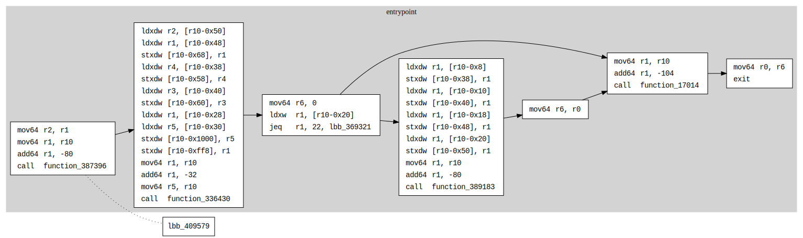

Dotting: Customizing Reduced CFGs
The dotting feature in Sol-azy allows you to manually augment a reduced control flow graph (CFG) by reinserting specific function clusters from the full graph.
This is particularly useful when using --reduced or --only-entrypoint modes, which intentionally drop unused or library-heavy functions. With dotting, you can selectively restore those clusters for targeted analysis.
Motivation
Reduced graphs simplify reverse engineering, but sometimes:
- Important logic is optimized into shared helpers
- Runtime wrappers (e.g. error handling) live outside the entrypoint
- Functions of interest are excluded unintentionally
With dotting, you don’t need to regenerate a new full CFG. Instead, you can grow your existing graph by manually appending clusters and their edges.
How It Works
-
You create a small JSON file listing function cluster IDs to reinsert.
-
You run the
dottingcommand pointing to:- The original full
.dotfile (reference), - Your reduced
.dotfile, - And the JSON config.
- The original full
-
Sol-azy:
- Adds matching
subgraph cluster_XXblocks. - Appends new edges only if both sides already exist in the reduced graph.
- Adds matching
-
The result is saved as
updated_<reduced>.dot.
CLI Usage
cargo run -- dotting \
--config path/to/functions.json \
--reduced-dot path/to/reduced.dot \
--full-dot path/to/full.dot
Config Format
Your JSON file should look like:
{
"functions": ["10", "42", "87"]
}
Each entry is a cluster ID (i.e., the number in cluster_<id> from the .dot file).
These are generally assigned incrementally during graph generation.
You can locate these IDs by inspecting the full .dot or searching for strings like:
subgraph cluster_42 {
label="function_name";
...
}
Example Workflow
-
[one-time action] Generate a full graph (It allows for easily selecting specific clusters without re-analyzing the full bytecode every time a function needs to be added):
cargo run -- reverse \ --mode cfg \ --bytecodes-file program.so \ --out-dir ./full \ -
Generate a reduced graph with only the entrypoint:
cargo run -- reverse \ --mode cfg \ --bytecodes-file program.so \ --out-dir ./out \ --only-entrypoint -
Create a
functions.jsonfile:{ "functions": ["17014"] } -
Run dotting:
cargo run -- dotting \ --config ./functions.json \ --reduced-dot ./out/cfg.dot \ --full-dot ./full/cfg.dot -
Visualize the result:
xdot ./out/updated_cfg.dot
Example showcase
Before
digraph {
graph [
rankdir=LR;
concentrate=True;
style=filled;
color=lightgrey;
];
node [
shape=rect;
style=filled;
fillcolor=white;
fontname="Courier New";
];
edge [
fontname="Courier New";
];
subgraph cluster_369287 {
label="entrypoint";
tooltip=lbb_369287;
lbb_369287 [label=<<table border="0" cellborder="0" cellpadding="3"><tr><td align="left">mov64</td><td align="left">r2, r1</td></tr><tr><td align="left">mov64</td><td align="left">r1, r10</td></tr><tr><td align="left">add64</td><td align="left">r1, -80</td></tr><tr><td align="left">call</td><td align="left">function_387396</td></tr></table>>];
lbb_369291 [label=<<table border="0" cellborder="0" cellpadding="3"><tr><td align="left">ldxdw</td><td align="left">r2, [r10-0x50]</td></tr><tr><td align="left">ldxdw</td><td align="left">r1, [r10-0x48]</td></tr><tr><td align="left">stxdw</td><td align="left">[r10-0x68], r1</td></tr><tr><td align="left">ldxdw</td><td align="left">r4, [r10-0x38]</td></tr><tr><td align="left">stxdw</td><td align="left">[r10-0x58], r4</td></tr><tr><td align="left">ldxdw</td><td align="left">r3, [r10-0x40]</td></tr><tr><td align="left">stxdw</td><td align="left">[r10-0x60], r3</td></tr><tr><td align="left">ldxdw</td><td align="left">r1, [r10-0x28]</td></tr><tr><td align="left">ldxdw</td><td align="left">r5, [r10-0x30]</td></tr><tr><td align="left">stxdw</td><td align="left">[r10-0x1000], r5</td></tr><tr><td align="left">stxdw</td><td align="left">[r10-0xff8], r1</td></tr><tr><td align="left">mov64</td><td align="left">r1, r10</td></tr><tr><td align="left">add64</td><td align="left">r1, -32</td></tr><tr><td align="left">mov64</td><td align="left">r5, r10</td></tr><tr><td align="left">call</td><td align="left">function_336430</td></tr></table>>];
lbb_369306 [label=<<table border="0" cellborder="0" cellpadding="3"><tr><td align="left">mov64</td><td align="left">r6, 0</td></tr><tr><td align="left">ldxw</td><td align="left">r1, [r10-0x20]</td></tr><tr><td align="left">jeq</td><td align="left">r1, 22, lbb_369321</td></tr></table>>];
lbb_369309 [label=<<table border="0" cellborder="0" cellpadding="3"><tr><td align="left">ldxdw</td><td align="left">r1, [r10-0x8]</td></tr><tr><td align="left">stxdw</td><td align="left">[r10-0x38], r1</td></tr><tr><td align="left">ldxdw</td><td align="left">r1, [r10-0x10]</td></tr><tr><td align="left">stxdw</td><td align="left">[r10-0x40], r1</td></tr><tr><td align="left">ldxdw</td><td align="left">r1, [r10-0x18]</td></tr><tr><td align="left">stxdw</td><td align="left">[r10-0x48], r1</td></tr><tr><td align="left">ldxdw</td><td align="left">r1, [r10-0x20]</td></tr><tr><td align="left">stxdw</td><td align="left">[r10-0x50], r1</td></tr><tr><td align="left">mov64</td><td align="left">r1, r10</td></tr><tr><td align="left">add64</td><td align="left">r1, -80</td></tr><tr><td align="left">call</td><td align="left">function_389183</td></tr></table>>];
lbb_369320 [label=<<table border="0" cellborder="0" cellpadding="3"><tr><td align="left">mov64</td><td align="left">r6, r0</td></tr></table>>];
lbb_369321 [label=<<table border="0" cellborder="0" cellpadding="3"><tr><td align="left">mov64</td><td align="left">r1, r10</td></tr><tr><td align="left">add64</td><td align="left">r1, -104</td></tr><tr><td align="left">call</td><td align="left">function_17014</td></tr></table>>];
lbb_369324 [label=<<table border="0" cellborder="0" cellpadding="3"><tr><td align="left">mov64</td><td align="left">r0, r6</td></tr><tr><td align="left">exit</td></tr></table>>];
}
lbb_369287 -> lbb_409579 [style=dotted; arrowhead=none];
lbb_369287 -> {lbb_369291};
lbb_369291 -> lbb_369287 [style=dotted; arrowhead=none];
lbb_369291 -> {lbb_369306};
lbb_369306 -> lbb_369291 [style=dotted; arrowhead=none];
lbb_369306 -> {lbb_369309 lbb_369321};
lbb_369309 -> lbb_369306 [style=dotted; arrowhead=none];
lbb_369309 -> {lbb_369320};
lbb_369320 -> lbb_369309 [style=dotted; arrowhead=none];
lbb_369320 -> {lbb_369321};
lbb_369321 -> lbb_369306 [style=dotted; arrowhead=none];
lbb_369321 -> {lbb_369324};
lbb_369324 -> lbb_369321 [style=dotted; arrowhead=none];
}

After
digraph {
graph [
rankdir=LR;
concentrate=True;
style=filled;
color=lightgrey;
];
node [
shape=rect;
style=filled;
fillcolor=white;
fontname="Courier New";
];
edge [
fontname="Courier New";
];
subgraph cluster_369287 {
label="entrypoint";
tooltip=lbb_369287;
lbb_369287 [label=<<table border="0" cellborder="0" cellpadding="3"><tr><td align="left">mov64</td><td align="left">r2, r1</td></tr><tr><td align="left">mov64</td><td align="left">r1, r10</td></tr><tr><td align="left">add64</td><td align="left">r1, -80</td></tr><tr><td align="left">call</td><td align="left">function_387396</td></tr></table>>];
lbb_369291 [label=<<table border="0" cellborder="0" cellpadding="3"><tr><td align="left">ldxdw</td><td align="left">r2, [r10-0x50]</td></tr><tr><td align="left">ldxdw</td><td align="left">r1, [r10-0x48]</td></tr><tr><td align="left">stxdw</td><td align="left">[r10-0x68], r1</td></tr><tr><td align="left">ldxdw</td><td align="left">r4, [r10-0x38]</td></tr><tr><td align="left">stxdw</td><td align="left">[r10-0x58], r4</td></tr><tr><td align="left">ldxdw</td><td align="left">r3, [r10-0x40]</td></tr><tr><td align="left">stxdw</td><td align="left">[r10-0x60], r3</td></tr><tr><td align="left">ldxdw</td><td align="left">r1, [r10-0x28]</td></tr><tr><td align="left">ldxdw</td><td align="left">r5, [r10-0x30]</td></tr><tr><td align="left">stxdw</td><td align="left">[r10-0x1000], r5</td></tr><tr><td align="left">stxdw</td><td align="left">[r10-0xff8], r1</td></tr><tr><td align="left">mov64</td><td align="left">r1, r10</td></tr><tr><td align="left">add64</td><td align="left">r1, -32</td></tr><tr><td align="left">mov64</td><td align="left">r5, r10</td></tr><tr><td align="left">call</td><td align="left">function_336430</td></tr></table>>];
lbb_369306 [label=<<table border="0" cellborder="0" cellpadding="3"><tr><td align="left">mov64</td><td align="left">r6, 0</td></tr><tr><td align="left">ldxw</td><td align="left">r1, [r10-0x20]</td></tr><tr><td align="left">jeq</td><td align="left">r1, 22, lbb_369321</td></tr></table>>];
lbb_369309 [label=<<table border="0" cellborder="0" cellpadding="3"><tr><td align="left">ldxdw</td><td align="left">r1, [r10-0x8]</td></tr><tr><td align="left">stxdw</td><td align="left">[r10-0x38], r1</td></tr><tr><td align="left">ldxdw</td><td align="left">r1, [r10-0x10]</td></tr><tr><td align="left">stxdw</td><td align="left">[r10-0x40], r1</td></tr><tr><td align="left">ldxdw</td><td align="left">r1, [r10-0x18]</td></tr><tr><td align="left">stxdw</td><td align="left">[r10-0x48], r1</td></tr><tr><td align="left">ldxdw</td><td align="left">r1, [r10-0x20]</td></tr><tr><td align="left">stxdw</td><td align="left">[r10-0x50], r1</td></tr><tr><td align="left">mov64</td><td align="left">r1, r10</td></tr><tr><td align="left">add64</td><td align="left">r1, -80</td></tr><tr><td align="left">call</td><td align="left">function_389183</td></tr></table>>];
lbb_369320 [label=<<table border="0" cellborder="0" cellpadding="3"><tr><td align="left">mov64</td><td align="left">r6, r0</td></tr></table>>];
lbb_369321 [label=<<table border="0" cellborder="0" cellpadding="3"><tr><td align="left">mov64</td><td align="left">r1, r10</td></tr><tr><td align="left">add64</td><td align="left">r1, -104</td></tr><tr><td align="left">call</td><td align="left">function_17014</td></tr></table>>];
lbb_369324 [label=<<table border="0" cellborder="0" cellpadding="3"><tr><td align="left">mov64</td><td align="left">r0, r6</td></tr><tr><td align="left">exit</td></tr></table>>];
}
lbb_369287 -> lbb_409579 [style=dotted; arrowhead=none];
lbb_369287 -> {lbb_369291};
lbb_369291 -> lbb_369287 [style=dotted; arrowhead=none];
lbb_369291 -> {lbb_369306};
lbb_369306 -> lbb_369291 [style=dotted; arrowhead=none];
lbb_369306 -> {lbb_369309 lbb_369321};
lbb_369309 -> lbb_369306 [style=dotted; arrowhead=none];
lbb_369309 -> {lbb_369320};
lbb_369320 -> lbb_369309 [style=dotted; arrowhead=none];
lbb_369320 -> {lbb_369321};
lbb_369321 -> lbb_369306 [style=dotted; arrowhead=none];
lbb_369321 -> {lbb_369324};
lbb_369324 -> lbb_369321 [style=dotted; arrowhead=none];
subgraph cluster_17014 {
label="function_17014";
tooltip=lbb_17014;
lbb_17014 [label=<<table border="0" cellborder="0" cellpadding="3"><tr><td align="left">mov64</td><td align="left">r6, r1</td></tr><tr><td align="left">ldxdw</td><td align="left">r7, [r6+0x10]</td></tr><tr><td align="left">jeq</td><td align="left">r7, 0, lbb_17036</td></tr></table>>];
lbb_17017 [label=<<table border="0" cellborder="0" cellpadding="3"><tr><td align="left">ldxdw</td><td align="left">r8, [r6+0x8]</td></tr><tr><td align="left">mul64</td><td align="left">r7, 48</td></tr><tr><td align="left">add64</td><td align="left">r8, 16</td></tr><tr><td align="left">ja</td><td align="left">lbb_17043</td></tr></table>>];
lbb_17043 [label=<<table border="0" cellborder="0" cellpadding="3"><tr><td align="left">ldxdw</td><td align="left">r1, [r8-0x8]</td></tr><tr><td align="left">ldxdw</td><td align="left">r2, [r1+0x0]</td></tr><tr><td align="left">add64</td><td align="left">r2, -1</td></tr><tr><td align="left">stxdw</td><td align="left">[r1+0x0], r2</td></tr><tr><td align="left">jne</td><td align="left">r2, 0, lbb_17021</td></tr></table>>];
lbb_17048 [label=<<table border="0" cellborder="0" cellpadding="3"><tr><td align="left">ldxdw</td><td align="left">r2, [r1+0x8]</td></tr><tr><td align="left">add64</td><td align="left">r2, -1</td></tr><tr><td align="left">stxdw</td><td align="left">[r1+0x8], r2</td></tr><tr><td align="left">jne</td><td align="left">r2, 0, lbb_17021</td></tr></table>>];
lbb_17052 [label=<<table border="0" cellborder="0" cellpadding="3"><tr><td align="left">mov64</td><td align="left">r2, 32</td></tr><tr><td align="left">mov64</td><td align="left">r3, 8</td></tr><tr><td align="left">call</td><td align="left">function_373318</td></tr></table>>];
lbb_17055 [label=<<table border="0" cellborder="0" cellpadding="3"><tr><td align="left">ja</td><td align="left">lbb_17021</td></tr></table>>];
lbb_17021 [label=<<table border="0" cellborder="0" cellpadding="3"><tr><td align="left">ldxdw</td><td align="left">r1, [r8+0x0]</td></tr><tr><td align="left">ldxdw</td><td align="left">r2, [r1+0x0]</td></tr><tr><td align="left">add64</td><td align="left">r2, -1</td></tr><tr><td align="left">stxdw</td><td align="left">[r1+0x0], r2</td></tr><tr><td align="left">jne</td><td align="left">r2, 0, lbb_17033</td></tr></table>>];
lbb_17026 [label=<<table border="0" cellborder="0" cellpadding="3"><tr><td align="left">ldxdw</td><td align="left">r2, [r1+0x8]</td></tr><tr><td align="left">add64</td><td align="left">r2, -1</td></tr><tr><td align="left">stxdw</td><td align="left">[r1+0x8], r2</td></tr><tr><td align="left">jne</td><td align="left">r2, 0, lbb_17033</td></tr></table>>];
lbb_17030 [label=<<table border="0" cellborder="0" cellpadding="3"><tr><td align="left">mov64</td><td align="left">r2, 40</td></tr><tr><td align="left">mov64</td><td align="left">r3, 8</td></tr><tr><td align="left">call</td><td align="left">function_373318</td></tr></table>>];
lbb_17033 [label=<<table border="0" cellborder="0" cellpadding="3"><tr><td align="left">add64</td><td align="left">r8, 48</td></tr><tr><td align="left">add64</td><td align="left">r7, -48</td></tr><tr><td align="left">jne</td><td align="left">r7, 0, lbb_17043</td></tr></table>>];
lbb_17036 [label=<<table border="0" cellborder="0" cellpadding="3"><tr><td align="left">ldxdw</td><td align="left">r2, [r6+0x0]</td></tr><tr><td align="left">jeq</td><td align="left">r2, 0, lbb_17056</td></tr></table>>];
lbb_17038 [label=<<table border="0" cellborder="0" cellpadding="3"><tr><td align="left">ldxdw</td><td align="left">r1, [r6+0x8]</td></tr><tr><td align="left">mul64</td><td align="left">r2, 48</td></tr><tr><td align="left">mov64</td><td align="left">r3, 8</td></tr><tr><td align="left">call</td><td align="left">function_373318</td></tr></table>>];
lbb_17042 [label=<<table border="0" cellborder="0" cellpadding="3"><tr><td align="left">ja</td><td align="left">lbb_17056</td></tr></table>>];
lbb_17056 [label=<<table border="0" cellborder="0" cellpadding="3"><tr><td align="left">exit</td></tr></table>>];
}
lbb_17014 -> {lbb_17017 lbb_17036};
lbb_17017 -> {lbb_17043};
lbb_17021 -> {lbb_17026 lbb_17033};
lbb_17026 -> {lbb_17030 lbb_17033};
lbb_17030 -> {lbb_17033};
lbb_17033 -> {lbb_17036 lbb_17043};
lbb_17036 -> {lbb_17038 lbb_17056};
lbb_17038 -> {lbb_17042};
lbb_17042 -> {lbb_17056};
lbb_17043 -> {lbb_17021 lbb_17048};
lbb_17048 -> {lbb_17021 lbb_17052};
lbb_17052 -> {lbb_17055};
lbb_17055 -> {lbb_17021};
lbb_409579 -> {lbb_17014 lbb_369287};
}

Behavior Notes
- Edges are only added if both source and target basic blocks are already present.
- If you want edges for new blocks too, consider adding additional clusters.
updated_cfg.dotis created next to your original file.- The original
cfg.dotis not modified.
Tips
- Combine
--only-entrypoint+dottingto build your CFG incrementally.